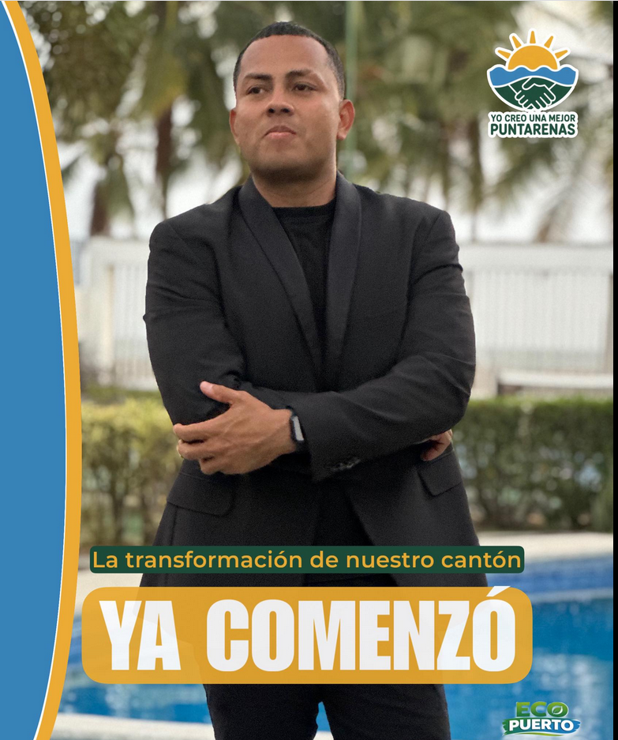
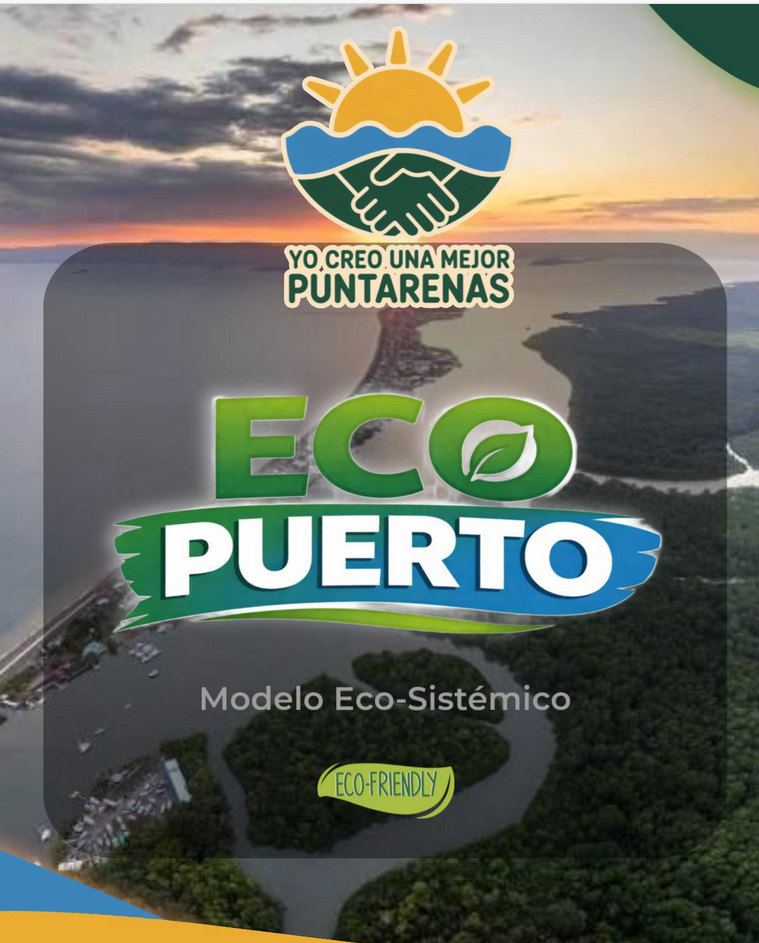

Activación productiva y empleo digno
Turismo sostenible, apoyo al comercio local, impulso al pescador y oportunidades reales de crecimiento.
PDF próximamenteUn movimiento abierto para transformar Puntarenas
Una propuesta ciudadana moderna, firme y cercana, impulsada por Josué Escobar para recuperar la confianza, activar la economía local y poner la transparencia al centro de cada decisión.

Una candidatura enfocada en cercanía, firmeza y resultados visibles para el cantón.
Misión y visión
Misión: trabajar con mucho esfuerzo, compromiso y conocimiento los ejes fundamentales de una gestión municipal eficiente y productiva para la evolución de nuestro cantón número uno de nuestra provincia.
Visión: llegar a la alcaldía, vice alcaldía, regidurías y sindicaturas a transformar nuestro cantón en una de la ciudades más modernas, educadas, productivas, limpias, sostenibles, turísticas y dinamizadas de toda Latinoamérica.
Conocer estatutos y valoresPlan de gobierno
Turismo sostenible, apoyo al comercio local, impulso al pescador y oportunidades reales de crecimiento.
PDF próximamenteValorar la identidad del artista puntarenense con producciones culturales autóctonas y originales que representen nuestra historia desde nuestros antepasados hasta la sociedad porteña actual
Ver Propuesta de Campaña (PDF)Brigadas locales, articulación institucional y programas comunitarios que prioricen prevención y bienestar.
PDF próximamenteIluminación estratégica, prevención juvenil y recuperación de espacios públicos para la convivencia.
PDF próximamenteTransparencia
Publicamos ingresos, gastos, estructura organizativa y reportes periódicos en lenguaje claro para toda la ciudadanía.
Estatutos, manifiesto ideológico, código ético, estructura interna y reportes financieros descargables.
La base está pensada para trabajar con SSL, mitigación DDoS, validación robusta y controles anti-spam.

Detalle mensual de aportes declarados y uso responsable de cada recurso.
Organigrama claro con responsables, comités territoriales y enlaces directos de contacto.
Una línea programática con énfasis en ambiente, desarrollo responsable y una identidad moderna para Puntarenas.
Sala de prensa
Actualizaciones rápidas de campaña, postura institucional y mensajes clave para medios y ciudadanía.
Recorridos territoriales, encuentros ciudadanos y eventos abiertos a la comunidad.
Logos, fotografías, piezas oficiales y lineamientos de uso de marca.
Facebook como canal principal para difundir mensajes, convocatorias, videos y contacto directo con la comunidad.
Participación ciudadana
Brigadas barriales, escucha vecinal y presencia constante en comunidades.
Capacitación ciudadana para garantizar orden, confianza y vigilancia democrática.
Una narrativa de desarrollo eco-sistémico para conectar ambiente, ciudad, turismo y futuro cantonal.
Participa hoy
Mientras se habilitan más canales, la página oficial de Facebook funciona como punto central de contacto y actualización.
Ir a Facebook